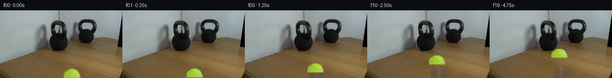
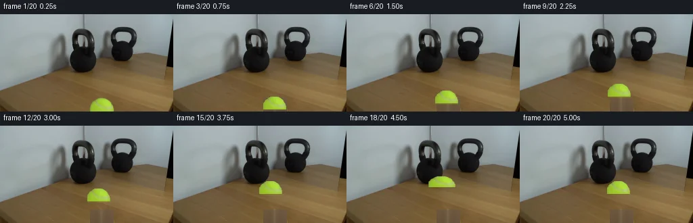
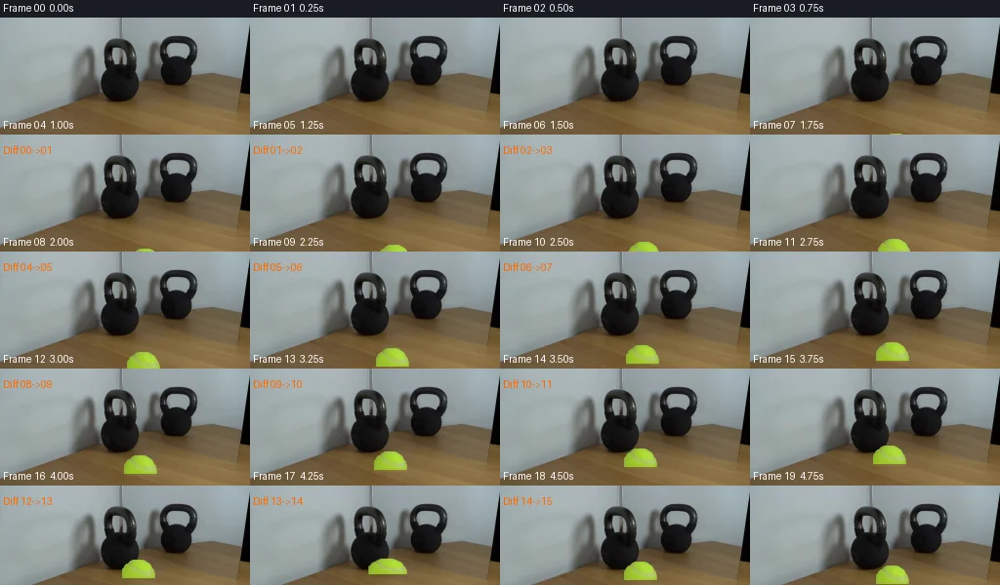

V0 · 初版 · 最终提交
![]()
Observable Generation Trace
把最终像素视频、Harness 冻结的每轮候选、真实工具事件和 Agent 自述放在同一页。可观测证据与模型自述分开标记，避免把“模型说它检查过”误当成真实工具调用。
![首帧]()
Static locked-off single-shot with fixed frame throughout filmed with constant framerate in real-time. The scene shows a realistic scientific demonstration. The scene only contains the described setup and actions. The 30lb kettlebell sits next to a mirror that reflects the kettlebell on a wooden table. The tennis ball rolls slowly towards the 30lb kettlebell next to a mirror and hits the kettlebell.
首帧显示在左侧播放器初始画面。Track 权限、隔离和 tensor 一致性来自 run manifest，而不是 METHOD.md。
默认勾选初版和最终版；可选其他版本一起同步播放。仅检查图更新的连续重复快照已合并，回退旧视频仍保留为一次修订。
Observable events
来源：events.jsonl + run manifest
此 Track 禁止读取输出图片。逐轮预览由外部 Harness 自动冻结，只用于事后审计，生成 Agent 当时看不到这些页面。
Frozen candidates
每张图来自该 round 的真实 00 / 01 / 05 / 10 / 19 帧

pixels 02165c6db6ab62b1 · code 1006daf30174d609
--- previous/generate.py +++ current/generate.py @@ -0,0 +1,321 @@ +"""generate.py — PixelWorld-Text case 0155 +Tennis ball rolls slowly toward 30lb kettlebell next to a mirror on a wooden table. +20 frames @ 256x144, 4 fps, 5 seconds. Frame 00 = first_frame.png. + +Method: Extract tennis ball as masked sprite from first frame, inpaint table surface +behind the ball's original position, then composite the ball at animated positions +along a path toward the kettlebell. Add subtle impact deformation at contact. +""" + +from pathlib import Path +import numpy as np +from PIL import Image + +# ── Paths ────────────────────────────────────────────────────────────────── +CASE_DIR = Path(__file__).parent +FRAME0_PATH = CASE_DIR / "first_frame.png" +TMP_DIR = CASE_DIR / ".tmp" +TMP_DIR.mkdir(exist_ok=True) + +# ── Load first frame ─────────────────────────────────────────────────────── +first = np.array(Image.open(FRAME0_PATH)) +H, W = first.shape[:2] +assert first.shape == (144, 256, 3) and first.dtype == np.uint8 + +# ═══════════════════════════════════════════════════════════════════════════ +# 1. Extract the tennis ball as a masked sprite +# ═══════════════════════════════════════════════════════════════════════════ + +# Ball bounding box in frame coordinates +BALL_X0, BALL_X1 = 133, 168 # exclusive end +BALL_Y0, BALL_Y1 = 124, 144 # exclusive end +BALL_W = BALL_X1 - BALL_X0 # 35 +BALL_H = BALL_Y1 - BALL_Y0 # 20 + +ball_region = first[BALL_Y0:BALL_Y1, BALL_X0:BALL_X1].copy() + +# Ball mask: yellow-green tennis ball colors +# Use a precise mask tuned to the actual ball colors +r, g, b = ball_region[..., 0].astype(np.int16), ball_region[..., 1].astype(np.int16), ball_region[..., 2].astype(np.int16) +ball_mask = (g > 140) & (r > 110) & (b < 140) & (g > r) & ((g - b) > 30) +# Clean up: morphological close to fill small gaps +from scipy.ndimage import binary_closing, binary_opening +ball_mask = binary_closing(ball_mask, structure=np.ones((2, 2)), iterations=1) +ball_mask = binary_opening(ball_mask, structure=np.ones((2, 2)), iterations=1) + +# Ball sprite: RGBA (4-channel) with alpha from mask +ball_sprite = np.zeros((BALL_H, BALL_W, 4), dtype=np.float32) +ball_sprite[..., :3] = ball_region.astype(np.float32) +ball_sprite[..., 3] = ball_mask.astype(np.float32) * 255.0 + +# Ball alpha (0-1 range for compositing) +ball_alpha = ball_mask.astype(np.float32) + +# Ball reference center (for positioning) +BALL_CX = (BALL_X0 + BALL_X1) / 2.0 # 150.5 +BALL_CY = (BALL_Y0 + BALL_Y1) / 2.0 # 134.0 + +# ═══════════════════════════════════════════════════════════════════════════ +# 2. Create clean background (inpaint ball's original position) +# ═══════════════════════════════════════════════════════════════════════════ + +# The table surface above the ball (y=115-123) has similar wood tones. +# We extend this downward to fill the ball's original position. +# For a natural look, we sample from the area just above and use +# a combination of direct copy with subtle variation. + +background = first.astype(np.float32).copy() + +# Build a clean table texture for the ball's bbox area +# For each column, extend the table pattern from above downward +for x in range(BALL_X0, BALL_X1): + # Sample table colors from rows just above the ball + sample_rows = background[115:124, x, :] # 9 rows above ball + # Create a clean vertical strip by selecting the median-like row and repeating + # Actually, use a simple approach: for each row in ball area, + # use the table color from the row above with slight jitter + + # Find the gradient of table colors just above + # Then extend that gradient + + # Simpler: use the average color at each y above and extend + pass + +# More robust approach: for the ball bbox area, fill with a +# smooth extension of the table surface +# Strategy: for each column x in [BALL_X0, BALL_X1], +# take the colors from rows 115-123 (table surface above ball), … diff truncated; 234 more lines …
Final visual checks
Harness 保存的最终产物


Agent claims
以下文字由生成 Agent 撰写，不等同于工具证据
Static locked-off single-shot. The 30lb kettlebell sits next to a mirror that reflects the kettlebell on a wooden table. The tennis ball rolls slowly towards the 30lb kettlebell next to a mirror and hits the kettlebell.
Narrative: Tennis ball rolls slowly from its starting position (bottom-right, center ~150,135) toward the kettlebell (center-left, base at ~x=120, y≈82). Ball accelerates gently, maintains speed, then impacts the kettlebell base and bounces back slightly.
| Frame | Time | Ball Center (x, y) | Event |
|---|---|---|---|
| 00 | 0.00s | (150, 135) | START: Ball at original position (exactly first_frame.png) |
| 01 | 0.25s | (150, 134) | Ball begins tiny movement |
| 02 | 0.50s | (149, 132) | Acceleration phase |
| 03 | 0.75s | (149, 130) | Rolling begins in earnest |
| 04 | 1.00s | (148, 127) | Steady rolling |
| 05 | 1.25s | (148, 124) | — |
| 06 | 1.50s | (147, 120) | — |
| 07 | 1.75s | (147, 117) | — |
| 08 | 2.00s | (146, 113) | — |
| 09 | 2.25s | (146, 109) | — |
| 10 | 2.50s | (145, 106) | Mid-roll |
| 11 | 2.75s | (145, 102) | — |
| 12 | 3.00s | (144, 99) | — |
| 13 | 3.25s | (144, 96) | — |
| 14 | 3.50s | (143, 93) | Ball approaching kettlebell |
| 15 | 3.75s | (143, 90) | Very close |
| 16 | 4.00s | (142, 87) | Near contact |
| 17 | 4.25s | (141, 85) | IMPACT: Ball contacts kettlebell base |
| 18 | 4.50s | (143, 89) | Rebound: ball bounces back |
| 19 | 4.75s | (145, 93) | Settle: ball comes to rest |
Pure Python pixel manipulation. No external models, engines, or network calls.
first_frame.pngpixels.npz)inspection.png: 8-frame contact sheet (frames 0, 2, 5, 8, 11, 14, 17, 19)transition_check.png: All 20 frames in 5×4 gridindex.html: Self-contained player via artifact_io.py delta encodingartifact_io.py (provided helper for saving outputs)player_template.html (provided HTML player template)